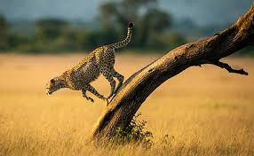
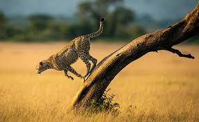

Nairobi National Park is Located in the Heart of Nairobi City, Kenya. It is one of the best National Parks in Afrika.The Park not only redfines the modern sports facility architecture but also serves as the catalyst and cornerstone of the Kenya's Capital Nairobi.


 

Nairobi National Park is Located along Mombasa Road 5miles from Jomo Kenyatta International Airport. The following are point of Contacts:
For direction click here to get the map of the National Park
There are so many Luxury Hotels Located Near Nairobi National Park. Guest rooms offer a blend of Victorian elegance and comfort, combined with all the practical, amenities of the modern age. The hotel offers an eclectic mix of dining options, from delectable Thai specialties, an Al fresco dinner with a city view, to an open air bistro café. The bar, with a refined ambiance, set in early 19th century décor, creates an elegant environment ideal for consuming any brew.


Raised on stilts, the restaurant offers breathtaking views of the lush gardens and the Ewaso Nyiro River. The bar is located along the river bank with natural spring water channels where guests can unwind. The swimming pool offers a relaxing spot, further enhanced with an elaborate pool bar that serves refreshing fresh juices, a variety of cocktails, beers and light beverages. Relax and unwind at the spa while listening to the trickling natural streams and sounds of the African jungle. Nairobi National Park is the place to visit